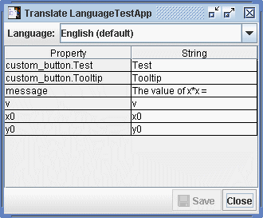
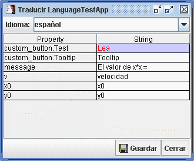

Translator Tool Help
The Translator Tool enables a user to easily translate and/or customize parameter names, button labels and other string properties of OSP applications for use in multiple languages. The tool displays the string properties along with their current translations in a table as shown on the left in Figure 1. The appearance of the OSP application that uses the string properties is shown on the right.

Figure 1. Translator Tool and OSP Control
To display the TranslatorTool from an OSP application, choose the Display|Language|Translate menu item.
Figure 2. Displaying the Translator Tool
To edit a translation, click a cell and enter the desired string.

Figure 3. Editing a String Property
After editing, the OSP application displays the new translations as shown in Figure 4.
Figure 4. The Translated OSP Control
Custom translations for a given language (english in this example) may be saved in a file that will be automatically loaded whenever the application is used in that language. To save the translations, click the Save button as shown in Figure 5.
The saved file name and location are determined by the name of the application class and language. For example, english translations for the demo.FirstPlotApp class would be stored in a file named "FirstPlotApp_en.properties" in the demo directory.
Figure 5. Saving Custom Translations
To edit translations in another language, select the desired language from the drop-down list or enter a 2-letter language code directly in the drop-down field (e.g., enter "fr" to create a french translation file).
Figure 6. Selecting a Language
Each language defines its own set of translations. When the OSP application is displayed in a given language, the corresponding translations are used as shown in Figure 7.

Figure 7. Spanish Translator Tool and OSP Control